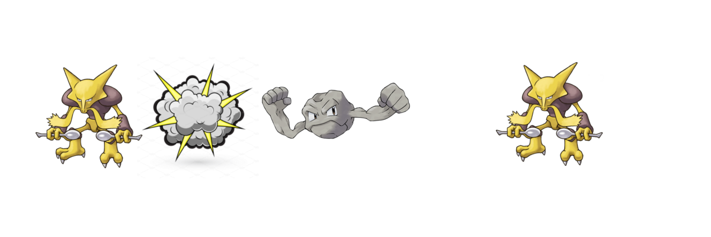

EV's are different than Eevee's
If you've ever heard of EV training, you might have been a little confused, thinking that competetive pokemon had something to do with this guy.

EV actually stands for Effort Value, and it's very important in training your Pokemon. EV's are hidden in the games, there is not way to view them, but there are ways to monitor your Pokemon's progress. This changes from game to game, so I'll leave it up to you to find out how it's done in the game you're playing.
The reason EV's are called Effort Values, is because they are obtained from using your Pokemon to battle other Pokemon. As mentioned, the games don't tell you any of this, but every time you fight another Pokemon, your Pokemon that beat it gains a certain number of specific EV's depending on the Pokemon that you beat. There are 6 types of EV's, one for each stat (HP, Attack, Defense, Special Attack, Special Defense, Speed).
Every Pokemon in the game is set to give you a certain type and number of EV's upon it's defeat, regardless of levels. this means that every time you fight a Geodude with your Alakazam, your Alakazam will gain 1 Defense EV.
For every 4 EV's a pokemon has in a specific stat, that stat gains 1 "real" point. So if you had two perfectly identical Alakazams, but the first Alakazam had 4 more EV's in it's Speed stat than the second, then the first Alakazam would be one point higher in speed than the second Alakazam. This would allow the first Alakazam to attack first every round, which would significantly change the battle.
So why not just keep putting EV's into a Pokemon until it's stats are really, really high? The only thing preventing your Charizard from having an attack stat of over 20,000 is that there are limits to how many EVs a Pokemon can obtain. The grand total is 510 across all your stats, but no single stat can have more than 255 EVs devoted to it. However, as noted before, only multiples of 4 apply to "real" stat changes. So, the most EVs you can pump into a stat to max it out is 252, the next three EVs would be wasted on that stat.